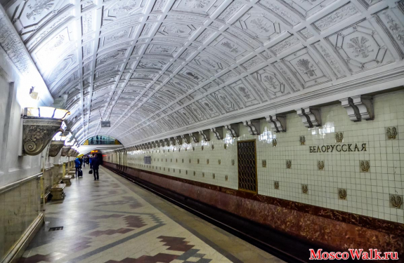
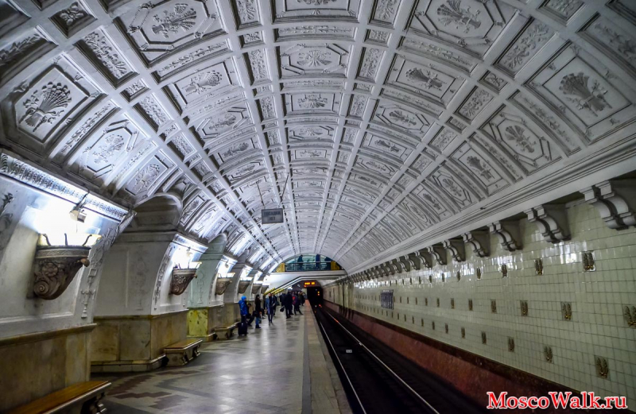

Первой станцией метро у Белорусского вокзала стала станция «Белорусская» Замоскворецкой линии, открытая в 1938 году в составе второй очереди метрополитена. В первоначальные планы Московского метрополитена Кольцевая линия не входила. Вместо неё планировалось строительство «диаметральных» линий с пересадками в центре города. Первый проект Кольцевой линии появился в 1934 году. Тогда планировалось построить эту линию под Садовым кольцом с 17 станциями. По проекту 1938 года планировалось построить линию значительно дальше от центра, чем построили впоследствии. Планировались станции «Усачёвская», «Калужская Застава», «Серпуховская Застава», «Завод имени Сталина», «Остапово», «Завод Серп и Молот», «Лефортово», «Спартаковская», «Красносельская», «Ржевский Вокзал», «Савёловский вокзал», «Динамо», «Краснопресненская Застава», «Киевская». В 1941 году проект Кольцевой линии изменили. Теперь её планировали построить ближе к центру. В 1943 году было принято решение о внеочередном строительстве Кольцевой линии по нынешней трассе с целью разгрузки пересадочного узла «Охотный Ряд» — «Площадь Свердлова» — «Площадь Революции».
 